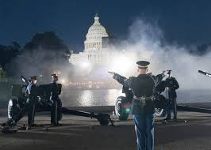

During the American Revolution, the legal separation of the thirteen colonies from Great Britain in 1776 actually occurred on July 2, when the Second Continental Congress voted to approve a resolution of independence that had been proposed in June by Richard Henry Lee of Virginia declaring the United States independent from Great Britain's rule. After voting for independence, Congress turned its attention to the Declaration of Independence, a statement explaining this decision, which had been prepared by the Committee of Five, which asked Thomas Jefferson to author its first draft.
While Jefferson consulted extensively with the other four members of the Committee of Five, he largely wrote the Declaration of Independence in isolation over 17 days between June 11, 1776, and June 28, 1776, from the second floor he was renting in a three-story private home at 700 Market Street in Philadelphia, now known as the Declaration House, and within walking distance of Independence Hall.
Congress debated and revised the wording of the Declaration, removing Jefferson's vigorous denunciation of King George III for importing the slave trade, finally approving it two days later on July 4.
Adams's prediction was off by two days. From the outset, Americans celebrated independence on July 4, the date shown on the much-publicized Declaration of Independence, rather than on July 2, the date the resolution of independence was approved in a closed session of Congress.
Independence Day is a national holiday marked by patriotic displays. Per 5 U.S.C. § 6103, Independence Day is a federal holiday, so all non-essential federal institutions (such as the postal service and federal courts) are closed on that day. While the legal holiday remains on July 4, if that date happens to be on a Saturday or Sunday, then federal government employees will instead take the day off on the adjacent Friday or Monday, respectively. Other non-essential that are non-government related may also be closed that day.
Families often celebrate Independence Day by hosting or attending a picnic or barbecue; many take advantage of the day off and, in some years, a long weekend to gather with family members or friends. Parades are often attended in many towns and cities, some being hours-long, with many floats and participants. Parades are often held in the mid-late morning (before get-togethers), with longer spectacles sometimes extending into the early afternoon. Fireworks displays typically occur in the evening, at such places as parks, harbors, off of boats, sporting venues, fairgrounds, public shorelines, or town squares. Decorations (e.g., streamers, balloons, and clothing) are generally colored red, white, and blue, the colors of the American flag, and many homes and businesses will decorate their properties with miniature American flags.
The night before the Fourth was once the focal point of celebrations, marked by raucous gatherings, often incorporating bonfires as their highlight. In New England, towns competed to build towering pyramids, assembled from barrels and casks. They were lit at nightfall to usher in the celebration. The highest ever were in Salem, Massachusetts, with pyramids composed of as many as forty tiers of barrels. These made some of the tallest bonfires ever recorded. The custom flourished in the 19th and 20th centuries and is still practiced in some New England and northeastern towns
Independence Day fireworks are often accompanied by patriotic songs, such as "The Star-Spangled Banner" (the American national anthem); "Columbia, the Gem of the Ocean"; "God Bless America"; "America the Beautiful"; "My Country, 'Tis of Thee"; "This Land Is Your Land"; "Stars and Stripes Forever"; "Yankee Doodle"; "God Bless the U.S.A." and "Dixie" (in southern states); "Lift Every Voice and Sing"; and occasionally (but has nominally fallen out of favor), "Hail Columbia". Some of the lyrics recall images of the Revolutionary War or the War of 1812.
Firework shows are held in many states, and many fireworks are sold for personal use or as an alternative to a public show. Safety concerns have led some states to ban fireworks or limit the sizes and types allowed. In addition, local and regional conditions may dictate whether the sale or use of fireworks in an area will be allowed; for example, the global supply chain crisis following the COVID-19 pandemic forced cancellations of shows. Some local or regional firework sales are limited or prohibited because of dry weather or other specific concerns. On these occasions the public may be prohibited from purchasing or discharging fireworks, but professional displays (such as those at sports events) may still take place.
A salute of one gun for each state in the United States, called a "salute to the union", is fired on Independence Day at noon by any capable military base.
